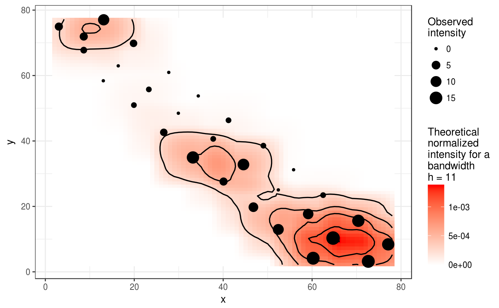
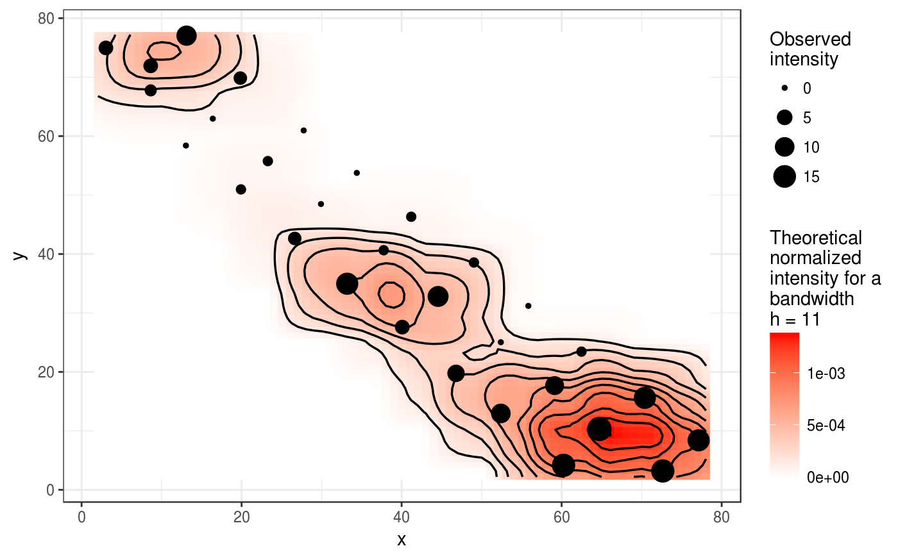

mapcomp performs a spatial pattern analysis based on the calculation
of a formal distance (the Hellinger distance) between the density map of
count or incidence data, and the density map of sampling effort. Statistical
tests of spatial homogeneity are based on permutations across sampling sites
and on valuable properties of the Hellinger distance.
mapcomp(data, ...) # S3 method for data.frame mapcomp(data, delta, bandwidth, nperm = 100, edge_correction = FALSE, threads = 1, verbose = TRUE, ...) # S3 method for matrix mapcomp(data, delta, bandwidth, nperm = 100, edge_correction = FALSE, threads = 1, verbose = TRUE, ...) # S3 method for count mapcomp(data, delta, bandwidth, nperm = 100, edge_correction = FALSE, threads = 1, verbose = TRUE, ...) # S3 method for incidence mapcomp(data, delta, bandwidth, nperm = 100, edge_correction = FALSE, threads = 1, verbose = TRUE, ...)
| data | A data frame or a matrix with only three columns: the two first
ones must be the x and y coordinates of the sampling units, and the last
one, the corresponding disease intensity observations. It can also be a
|
|---|---|
| ... | Additional arguments to be passed to other methods. |
| delta | Mesh size of the grid over the geographical domain of the sampling units used to compute the integral Hellinger distance between the probability density function of observations and the probability density function of sampling effort. |
| bandwidth | Bandwidth parameter for smoothing. It allows to test the spatial extent of heterogeneity if any. |
| nperm | Number of random permutations to assess probabilities. |
| edge_correction | Apply edge correction to account for the fact that bordering points intrinsically suffer from a lack of neighboring observation sites. FALSE by default. |
| threads | Number of threads to perform the computations. |
| verbose | Explain what is being done (TRUE by default). |
Lavigne C, Ricci B, Franck P, Senoussi R. 2010. Spatial analyses of ecological count data: A density map comparison approach. Basic and Applied Ecology. 11:734–742.
my_res <- mapcomp(codling_moths, 1, 11, edge_correction = FALSE)#> | | 0 % ~calculating |+ | 1 % ~07s |+ | 2 % ~06s |++ | 3 % ~06s |++ | 4 % ~06s |+++ | 5 % ~06s |+++ | 6 % ~06s |++++ | 7 % ~06s |++++ | 8 % ~06s |+++++ | 9 % ~06s |+++++ | 10% ~06s |++++++ | 11% ~05s |++++++ | 12% ~05s |+++++++ | 13% ~05s |+++++++ | 14% ~05s |++++++++ | 15% ~05s |++++++++ | 16% ~05s |+++++++++ | 17% ~05s |+++++++++ | 18% ~05s |++++++++++ | 19% ~05s |++++++++++ | 20% ~05s |+++++++++++ | 21% ~05s |+++++++++++ | 22% ~05s |++++++++++++ | 23% ~05s |++++++++++++ | 24% ~05s |+++++++++++++ | 25% ~05s |+++++++++++++ | 26% ~05s |++++++++++++++ | 27% ~05s |++++++++++++++ | 28% ~04s |+++++++++++++++ | 29% ~04s |+++++++++++++++ | 30% ~04s |++++++++++++++++ | 31% ~04s |++++++++++++++++ | 32% ~04s |+++++++++++++++++ | 33% ~04s |+++++++++++++++++ | 34% ~04s |++++++++++++++++++ | 35% ~04s |++++++++++++++++++ | 36% ~04s |+++++++++++++++++++ | 37% ~04s |+++++++++++++++++++ | 38% ~04s |++++++++++++++++++++ | 39% ~04s |++++++++++++++++++++ | 40% ~04s |+++++++++++++++++++++ | 41% ~04s |+++++++++++++++++++++ | 42% ~03s |++++++++++++++++++++++ | 43% ~03s |++++++++++++++++++++++ | 44% ~03s |+++++++++++++++++++++++ | 45% ~03s |+++++++++++++++++++++++ | 46% ~03s |++++++++++++++++++++++++ | 47% ~03s |++++++++++++++++++++++++ | 48% ~03s |+++++++++++++++++++++++++ | 49% ~03s |+++++++++++++++++++++++++ | 50% ~03s |++++++++++++++++++++++++++ | 51% ~03s |++++++++++++++++++++++++++ | 52% ~03s |+++++++++++++++++++++++++++ | 53% ~03s |+++++++++++++++++++++++++++ | 54% ~03s |++++++++++++++++++++++++++++ | 55% ~03s |++++++++++++++++++++++++++++ | 56% ~03s |+++++++++++++++++++++++++++++ | 57% ~03s |+++++++++++++++++++++++++++++ | 58% ~03s |++++++++++++++++++++++++++++++ | 59% ~02s |++++++++++++++++++++++++++++++ | 60% ~02s |+++++++++++++++++++++++++++++++ | 61% ~02s |+++++++++++++++++++++++++++++++ | 62% ~02s |++++++++++++++++++++++++++++++++ | 63% ~02s |++++++++++++++++++++++++++++++++ | 64% ~02s |+++++++++++++++++++++++++++++++++ | 65% ~02s |+++++++++++++++++++++++++++++++++ | 66% ~02s |++++++++++++++++++++++++++++++++++ | 67% ~02s |++++++++++++++++++++++++++++++++++ | 68% ~02s |+++++++++++++++++++++++++++++++++++ | 69% ~02s |+++++++++++++++++++++++++++++++++++ | 70% ~02s |++++++++++++++++++++++++++++++++++++ | 71% ~02s |++++++++++++++++++++++++++++++++++++ | 72% ~02s |+++++++++++++++++++++++++++++++++++++ | 73% ~02s |+++++++++++++++++++++++++++++++++++++ | 74% ~02s |++++++++++++++++++++++++++++++++++++++ | 75% ~02s |++++++++++++++++++++++++++++++++++++++ | 76% ~01s |+++++++++++++++++++++++++++++++++++++++ | 77% ~01s |+++++++++++++++++++++++++++++++++++++++ | 78% ~01s |++++++++++++++++++++++++++++++++++++++++ | 79% ~01s |++++++++++++++++++++++++++++++++++++++++ | 80% ~01s |+++++++++++++++++++++++++++++++++++++++++ | 81% ~01s |+++++++++++++++++++++++++++++++++++++++++ | 82% ~01s |++++++++++++++++++++++++++++++++++++++++++ | 83% ~01s |++++++++++++++++++++++++++++++++++++++++++ | 84% ~01s |+++++++++++++++++++++++++++++++++++++++++++ | 85% ~01s |+++++++++++++++++++++++++++++++++++++++++++ | 86% ~01s |++++++++++++++++++++++++++++++++++++++++++++ | 87% ~01s |++++++++++++++++++++++++++++++++++++++++++++ | 88% ~01s |+++++++++++++++++++++++++++++++++++++++++++++ | 89% ~01s |+++++++++++++++++++++++++++++++++++++++++++++ | 90% ~01s |++++++++++++++++++++++++++++++++++++++++++++++ | 91% ~01s |++++++++++++++++++++++++++++++++++++++++++++++ | 92% ~01s |+++++++++++++++++++++++++++++++++++++++++++++++ | 93% ~00s |+++++++++++++++++++++++++++++++++++++++++++++++ | 94% ~00s |++++++++++++++++++++++++++++++++++++++++++++++++ | 95% ~00s |++++++++++++++++++++++++++++++++++++++++++++++++ | 96% ~00s |+++++++++++++++++++++++++++++++++++++++++++++++++ | 97% ~00s |+++++++++++++++++++++++++++++++++++++++++++++++++ | 98% ~00s |++++++++++++++++++++++++++++++++++++++++++++++++++| 99% ~00s |++++++++++++++++++++++++++++++++++++++++++++++++++| 100% elapsed = 06smy_res#> Map Comparison analysis (mapcomp) #> #> Call: #> mapcomp.data.frame(data = codling_moths, delta = 1, bandwidth = 11, #> edge_correction = FALSE) #> #> Stat: 0.3423 (P = 0.009901) #>plot(my_res)my_count <- count(codling_moths, mapping(x = xm, y = ym)) my_res <- mapcomp(my_count, 1, 11, edge_correction = FALSE)#> | | 0 % ~calculating |+ | 1 % ~37s |+ | 2 % ~21s |++ | 3 % ~16s |++ | 4 % ~13s |+++ | 5 % ~12s |+++ | 6 % ~11s |++++ | 7 % ~10s |++++ | 8 % ~09s |+++++ | 9 % ~08s |+++++ | 10% ~08s |++++++ | 11% ~08s |++++++ | 12% ~07s |+++++++ | 13% ~07s |+++++++ | 14% ~07s |++++++++ | 15% ~07s |++++++++ | 16% ~07s |+++++++++ | 17% ~06s |+++++++++ | 18% ~06s |++++++++++ | 19% ~06s |++++++++++ | 20% ~06s |+++++++++++ | 21% ~06s |+++++++++++ | 22% ~06s |++++++++++++ | 23% ~06s |++++++++++++ | 24% ~06s |+++++++++++++ | 25% ~05s |+++++++++++++ | 26% ~05s |++++++++++++++ | 27% ~05s |++++++++++++++ | 28% ~05s |+++++++++++++++ | 29% ~05s |+++++++++++++++ | 30% ~05s |++++++++++++++++ | 31% ~05s |++++++++++++++++ | 32% ~05s |+++++++++++++++++ | 33% ~05s |+++++++++++++++++ | 34% ~05s |++++++++++++++++++ | 35% ~05s |++++++++++++++++++ | 36% ~05s |+++++++++++++++++++ | 37% ~04s |+++++++++++++++++++ | 38% ~04s |++++++++++++++++++++ | 39% ~04s |++++++++++++++++++++ | 40% ~04s |+++++++++++++++++++++ | 41% ~04s |+++++++++++++++++++++ | 42% ~04s |++++++++++++++++++++++ | 43% ~04s |++++++++++++++++++++++ | 44% ~04s |+++++++++++++++++++++++ | 45% ~04s |+++++++++++++++++++++++ | 46% ~04s |++++++++++++++++++++++++ | 47% ~04s |++++++++++++++++++++++++ | 48% ~04s |+++++++++++++++++++++++++ | 49% ~03s |+++++++++++++++++++++++++ | 50% ~03s |++++++++++++++++++++++++++ | 51% ~03s |++++++++++++++++++++++++++ | 52% ~03s |+++++++++++++++++++++++++++ | 53% ~03s |+++++++++++++++++++++++++++ | 54% ~03s |++++++++++++++++++++++++++++ | 55% ~03s |++++++++++++++++++++++++++++ | 56% ~03s |+++++++++++++++++++++++++++++ | 57% ~03s |+++++++++++++++++++++++++++++ | 58% ~03s |++++++++++++++++++++++++++++++ | 59% ~03s |++++++++++++++++++++++++++++++ | 60% ~03s |+++++++++++++++++++++++++++++++ | 61% ~03s |+++++++++++++++++++++++++++++++ | 62% ~02s |++++++++++++++++++++++++++++++++ | 63% ~02s |++++++++++++++++++++++++++++++++ | 64% ~02s |+++++++++++++++++++++++++++++++++ | 65% ~02s |+++++++++++++++++++++++++++++++++ | 66% ~02s |++++++++++++++++++++++++++++++++++ | 67% ~02s |++++++++++++++++++++++++++++++++++ | 68% ~02s |+++++++++++++++++++++++++++++++++++ | 69% ~02s |+++++++++++++++++++++++++++++++++++ | 70% ~02s |++++++++++++++++++++++++++++++++++++ | 71% ~02s |++++++++++++++++++++++++++++++++++++ | 72% ~02s |+++++++++++++++++++++++++++++++++++++ | 73% ~02s |+++++++++++++++++++++++++++++++++++++ | 74% ~02s |++++++++++++++++++++++++++++++++++++++ | 75% ~02s |++++++++++++++++++++++++++++++++++++++ | 76% ~02s |+++++++++++++++++++++++++++++++++++++++ | 77% ~01s |+++++++++++++++++++++++++++++++++++++++ | 78% ~01s |++++++++++++++++++++++++++++++++++++++++ | 79% ~01s |++++++++++++++++++++++++++++++++++++++++ | 80% ~01s |+++++++++++++++++++++++++++++++++++++++++ | 81% ~01s |+++++++++++++++++++++++++++++++++++++++++ | 82% ~01s |++++++++++++++++++++++++++++++++++++++++++ | 83% ~01s |++++++++++++++++++++++++++++++++++++++++++ | 84% ~01s |+++++++++++++++++++++++++++++++++++++++++++ | 85% ~01s |+++++++++++++++++++++++++++++++++++++++++++ | 86% ~01s |++++++++++++++++++++++++++++++++++++++++++++ | 87% ~01s |++++++++++++++++++++++++++++++++++++++++++++ | 88% ~01s |+++++++++++++++++++++++++++++++++++++++++++++ | 89% ~01s |+++++++++++++++++++++++++++++++++++++++++++++ | 90% ~01s |++++++++++++++++++++++++++++++++++++++++++++++ | 91% ~01s |++++++++++++++++++++++++++++++++++++++++++++++ | 92% ~00s |+++++++++++++++++++++++++++++++++++++++++++++++ | 93% ~00s |+++++++++++++++++++++++++++++++++++++++++++++++ | 94% ~00s |++++++++++++++++++++++++++++++++++++++++++++++++ | 95% ~00s |++++++++++++++++++++++++++++++++++++++++++++++++ | 96% ~00s |+++++++++++++++++++++++++++++++++++++++++++++++++ | 97% ~00s |+++++++++++++++++++++++++++++++++++++++++++++++++ | 98% ~00s |++++++++++++++++++++++++++++++++++++++++++++++++++| 99% ~00s |++++++++++++++++++++++++++++++++++++++++++++++++++| 100% elapsed = 06smy_res#> Map Comparison analysis (mapcomp) #> #> Call: #> mapcomp.count(data = my_count, delta = 1, bandwidth = 11, edge_correction = FALSE) #> #> Stat: 0.3423 (P = 0.009901) #>plot(my_res)